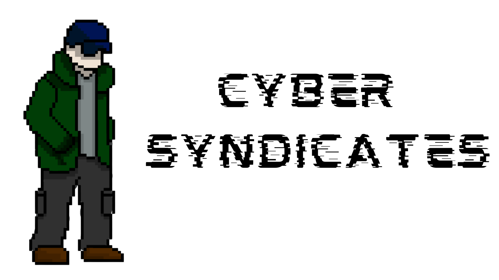
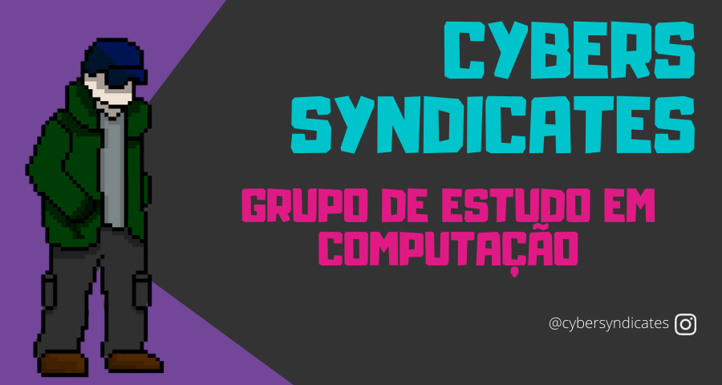

|  | Home | Quem somos | Contato |
|  | |
Sobre o grupo de estudoBem vindos, o Cyber Syndicates é um grupo de estudo com o objetivo de dividir resumos de pesquisa, projetos, ideias, enfim, algo dessa natureza. O objetivo geral é focar em código e abstração de problemas e soluções. Ferramenta principal de trabalho será o discord e github. Foco em diálogo e produção. Onde vai ocorrer objetivos e metas (no github), diálogo e interação no discord. Não é preciso saber programar para entrar no grupo de estudos. Mas vai precisar ralar muito para permanecer nele. Os projetos vai de web template, aplicações simples mobile, desenvolvimento de api, scripts para ambiente de trabalho, etc. |
|
Todos os direitos reservados. |
|